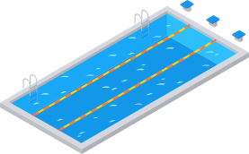

About Me
I'm a Swimmer
- At the age of 10 I swam my first swim meet.
- At the age of 12 I had qualified for State.
- At the age of 14 I had qualified for Mid-West Zones.
- At the age of 16 I became a Scholastic All American.
- At the age of 18 I was the fastest swimmer in the state of Illinois in the 200 Butterfly.
- At the age of 20 I had qualified for the Canada Olympic Trials.
- Endurance. Passion. Will. These are the traits of a good swimmer!

I'm a Software Engineer
- Learned to programming in High School
- Decided to major in Computer Science as a college student
- Collabed with a team of students to create an Asset Manager for the School of Education
- Built countless projects and libraries in my free time
- Recieved Bachelor of Arts degree in Computer Science from the Purdue School of Science